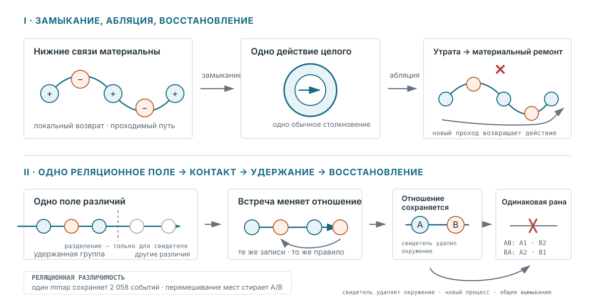

Публичный абстракт · Реляционная различимость / базальное познание
Реляционная различимость в минимальном ненейронном носителе
Интервенционная проверка через исторически обусловленную починку
Биологический вопрос и предлагаемый постулат
Исследования анатомического гомеостаза и базального познания рассматривают морфогенез как коллективное решение задач в пространстве форм: ткань восстанавливает крупную организацию после возмущения, а физиологические сети удерживают историю, не сводимую к текущей анатомии [1–4]. Может ли последующая починка зависеть от истории в реляционной организации того же носителя, который проводит восстановление?
Реляционная различимость (предлагаемый постулат): «Отношение физически содержательно лишь постольку, поскольку его стороны различимы». Две истории здесь физически различны, только если их разность меняет последующую починку, переживает сохраняющее отношения переименование адресов и исчезает при перемешивании значимого размещения отношений. Связь с теорией относительности программная, а не выводная: проверяется переименование адресов хранения, не преобразование пространства-времени.

BODY и WORLD — метки свидетеля для двух поверхностей хранения с одной физикой записей; замороженный закон столкновения видит только локальные отношения. Отдельный контроль с одним mmap убирает пространство имён поверхностей и сохраняет все 2 058 событий одного согласованного прохода. Последующий опыт с удалением и перезапуском ещё использует разделение свидетеля.Операциональный критерий
Реляционная история должна оставаться различимой в будущем поведении при вмешательстве, а не только классифицировать след.
Контур задаёт возможность возврата A/B до исполнения; во время работы он отношение не выбирает.
- Одно локальное продолжение пересекает разделение хранения, объявленное свидетелем.
- Окружающая запись должна измениться до того, как возврат будет заработан.
- Свидетель удаляет эти записи; удержанная группа перезапускается.
- Следуют одинаковое воздействие и та же новая рана.
- Единое поле и переименование должны сохранять различие, перемешивание размещения — стирать.